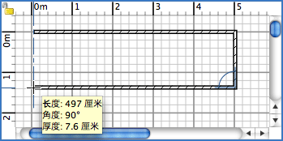

| 绘制墙体 | |||
如果您要绘制墙体，请在菜单上选择平面图→绘制墙体或者在工具栏上选择“绘制墙体”工具。
将鼠标指针移到平面图中，在墙体的起点处单击，然后将指针移动到墙体的另一端并单击或双击。在您双击鼠标或按下 Escape 键之前，单击鼠标的操作将同时指定当前绘制墙体的终点和下一堵墙体的起点。当绘制一系列的墙体时，如果您将墙体的起点定位在了一堵现有墙体的起点或终点上，那么您当前绘制的墙体就会在这一点上与该墙体连接；如果将墙体终点定位到另一堵墙体的起点或终点时在该点上双击鼠标，也会令当前绘制的墙体与该墙体在这一点上连接。所有定位墙体的点都位于对应墙体的中线上；新绘制墙体的厚度和高度可以在“参数设置”对话框中进行更改。  如果您想结束墙体的绘制，请使用平面图→选择菜单项或者工具栏上的“选择”工具。
|
|